경구중 1
직각삼각형의 변 대응으로 sin/cos/tan 정의를 읽는다.
HOLD: item_level_unit_live_family_generator_rule_and_prerequisite_review_pending; source_custody_rights_permission_pending; canonical_text_product_render_review_pending
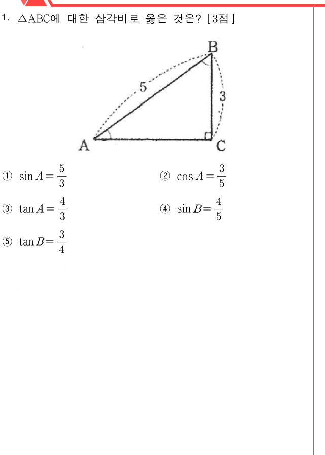
학년·방법·권리 보류를 승인으로 읽지 마세요. 새 쌍둥이는 이 패킷에서 제작하지 않았습니다.
직각삼각형의 변 대응으로 sin/cos/tan 정의를 읽는다.
HOLD: item_level_unit_live_family_generator_rule_and_prerequisite_review_pending; source_custody_rights_permission_pending; canonical_text_product_render_review_pending

sin의 정의에서 양수 직각삼각형의 해당 변을 구한다.
HOLD: item_level_unit_live_family_generator_rule_and_prerequisite_review_pending; source_custody_rights_permission_pending; canonical_text_product_render_review_pending
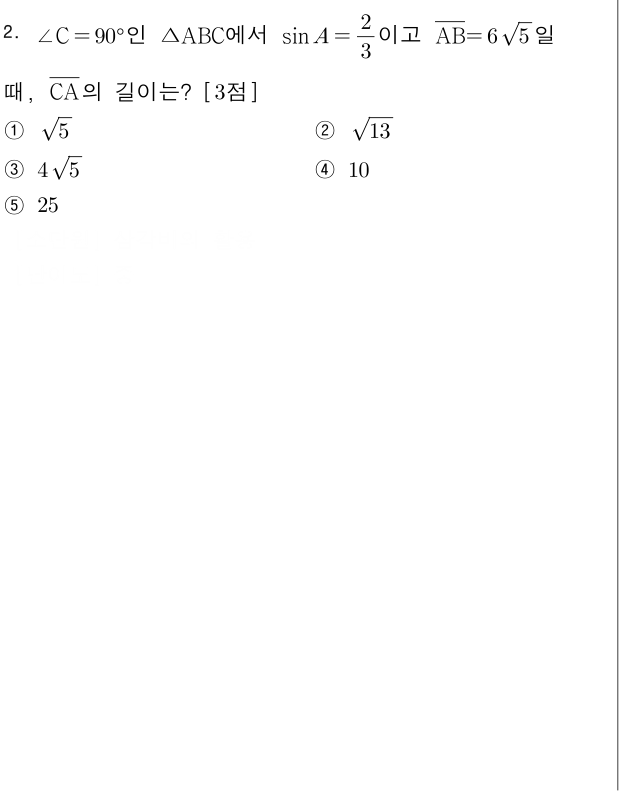
두 예각의 각 변 대응을 각각 읽어 주어진 두 삼각비를 곱한다.
HOLD: item_level_unit_live_family_generator_rule_and_prerequisite_review_pending; source_custody_rights_permission_pending; canonical_text_product_render_review_pending
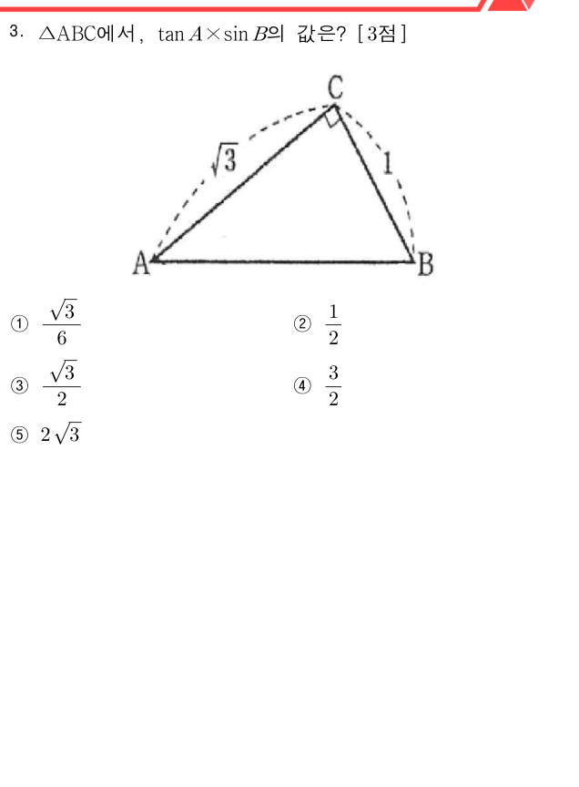
수선으로 생긴 두 직각삼각형의 각 대응과 빗변을 찾는다.
HOLD: item_level_unit_live_family_generator_rule_and_prerequisite_review_pending; source_custody_rights_permission_pending; canonical_text_product_render_review_pending
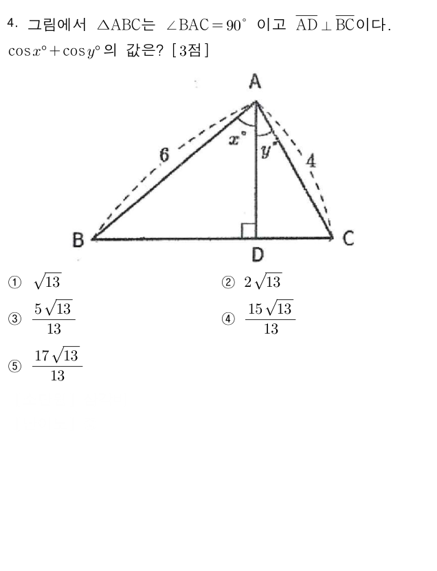
특수각의 삼각비와 사분원의 길이 비교로 대소를 판정한다.
HOLD: item_level_unit_live_family_generator_rule_and_prerequisite_review_pending; source_custody_rights_permission_pending; canonical_text_product_render_review_pending; specific_grade_method_risk
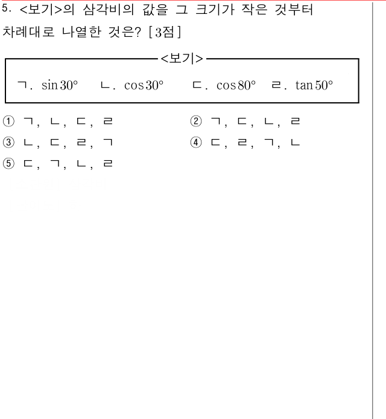
표의 값으로 예각을 식별한 뒤 사분원의 수선/접선 길이를 읽는다.
HOLD: item_level_unit_live_family_generator_rule_and_prerequisite_review_pending; source_custody_rights_permission_pending; canonical_text_product_render_review_pending; literal_trig_table_32_degree_sin_0_5229_accuracy_hold
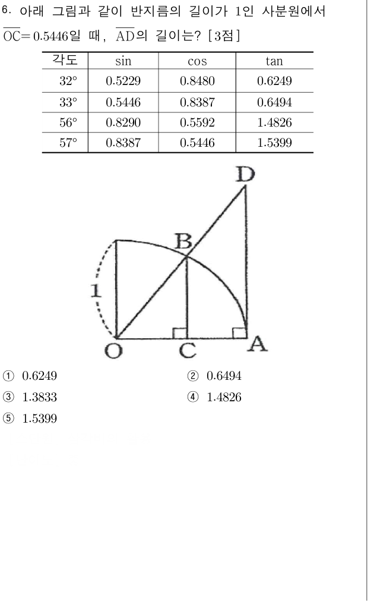
30/45/60도 직각삼각형의 값을 각각 대입하여 주장들을 비교한다.
HOLD: item_level_unit_live_family_generator_rule_and_prerequisite_review_pending; source_custody_rights_permission_pending; canonical_text_product_render_review_pending
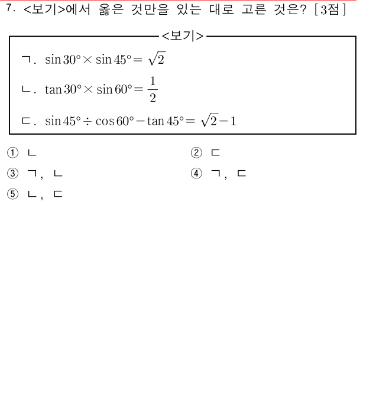
BC를 수선의 발에서 나누고 두 직각삼각형의 높이 관계를 세운다.
HOLD: item_level_unit_live_family_generator_rule_and_prerequisite_review_pending; source_custody_rights_permission_pending; canonical_text_product_render_review_pending
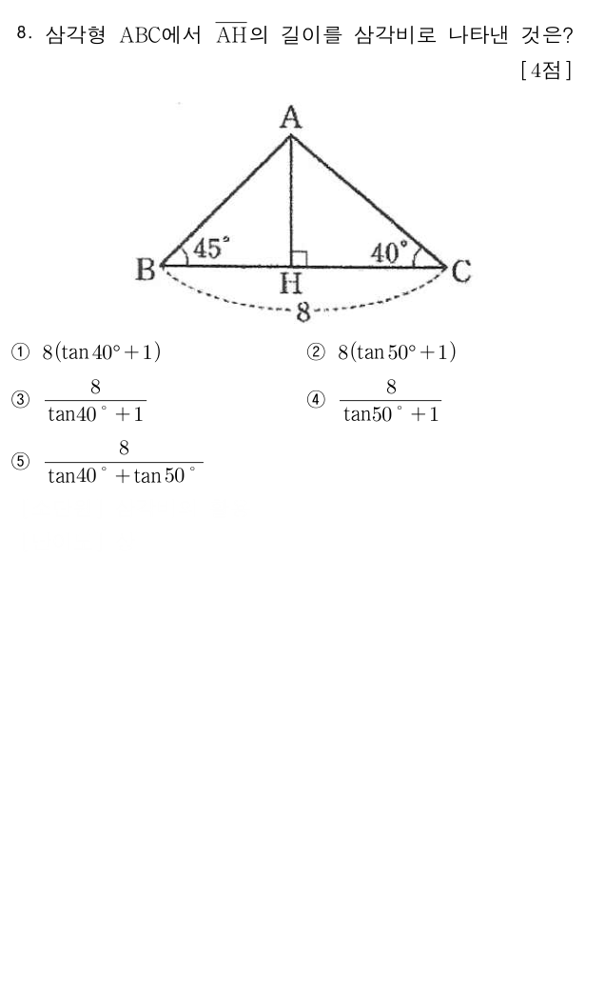
각의 이등분과 직각삼각형의 길이/각 대응으로 필요한 비를 구성한다.
HOLD: item_level_unit_live_family_generator_rule_and_prerequisite_review_pending; source_custody_rights_permission_pending; canonical_text_product_render_review_pending; specific_grade_method_risk
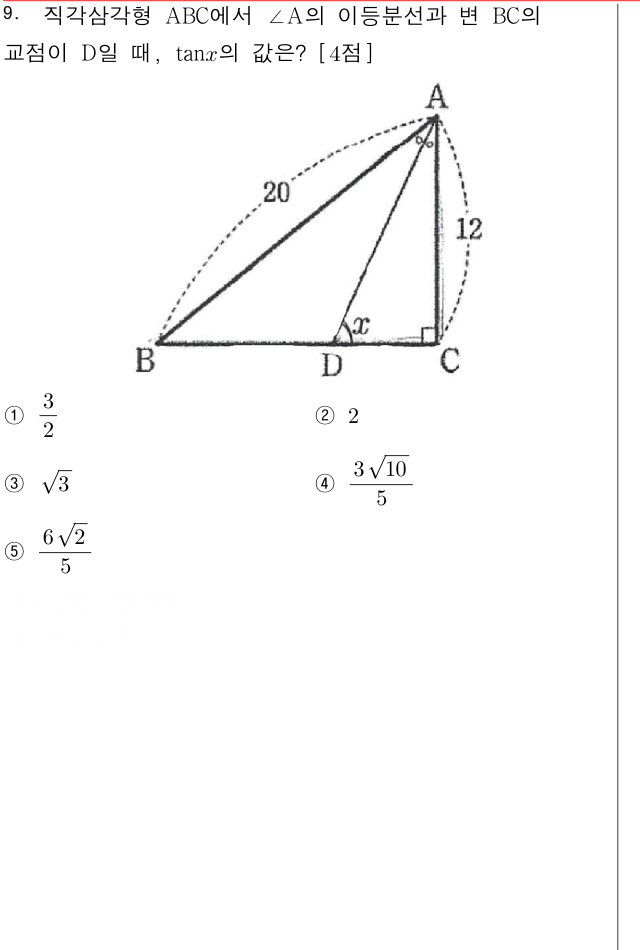
직사각형 속 30/45도 삼각형의 길이를 구해 15도 직각삼각형을 읽는다.
HOLD: item_level_unit_live_family_generator_rule_and_prerequisite_review_pending; source_custody_rights_permission_pending; canonical_text_product_render_review_pending; specific_grade_method_risk
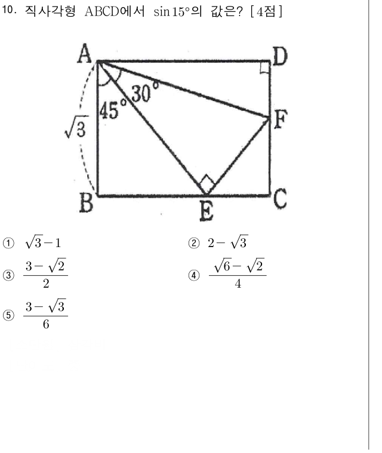
밑면 중심까지의 거리와 삼각비로 높이를 세워 각뿔 부피를 구성한다.
HOLD: item_level_unit_live_family_generator_rule_and_prerequisite_review_pending; source_custody_rights_permission_pending; canonical_text_product_render_review_pending; specific_grade_method_risk
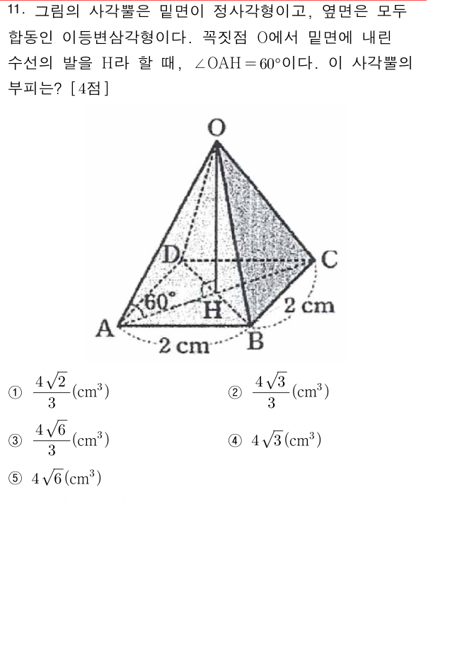
두 관측점과 탑 발에서 생긴 직각삼각형의 높이 관계를 연결한다.
HOLD: item_level_unit_live_family_generator_rule_and_prerequisite_review_pending; source_custody_rights_permission_pending; canonical_text_product_render_review_pending
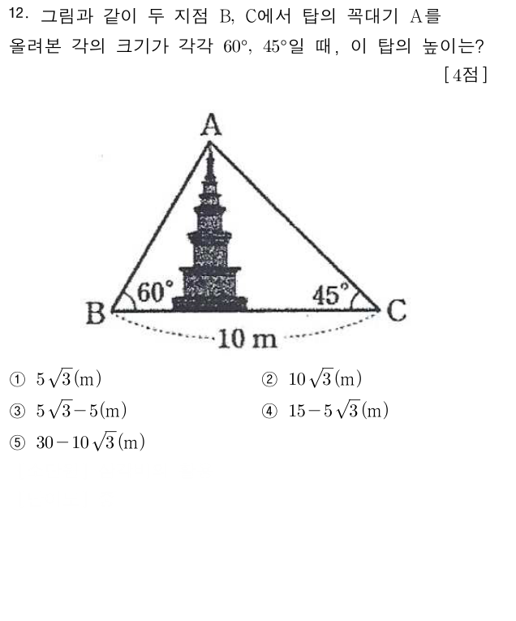
정삼각형의 각과 보조 수선으로 밑변/높이 및 부분 넓이를 구성한다.
HOLD: item_level_unit_live_family_generator_rule_and_prerequisite_review_pending; source_custody_rights_permission_pending; canonical_text_product_render_review_pending; specific_grade_method_risk
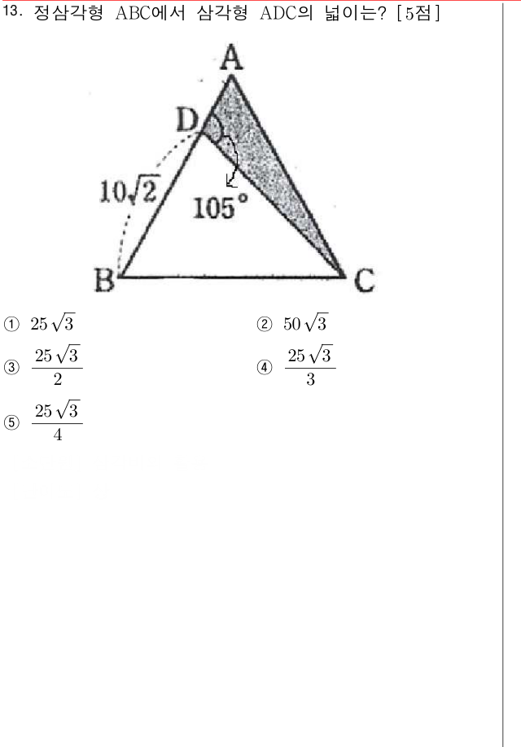
현의 수직이등분과 반지름 직각삼각형에 피타고라스를 적용한다.
HOLD: item_level_unit_live_family_generator_rule_and_prerequisite_review_pending; source_custody_rights_permission_pending; canonical_text_product_render_review_pending
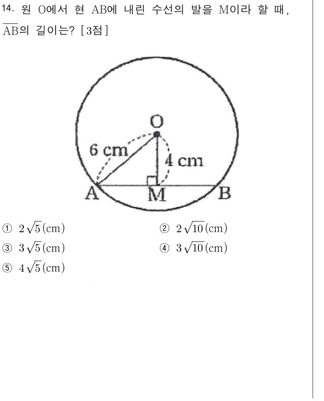
중심과 현 사이의 같은 거리에서 같은 현 및 이등변삼각형 각을 읽는다.
HOLD: item_level_unit_live_family_generator_rule_and_prerequisite_review_pending; source_custody_rights_permission_pending; canonical_text_product_render_review_pending
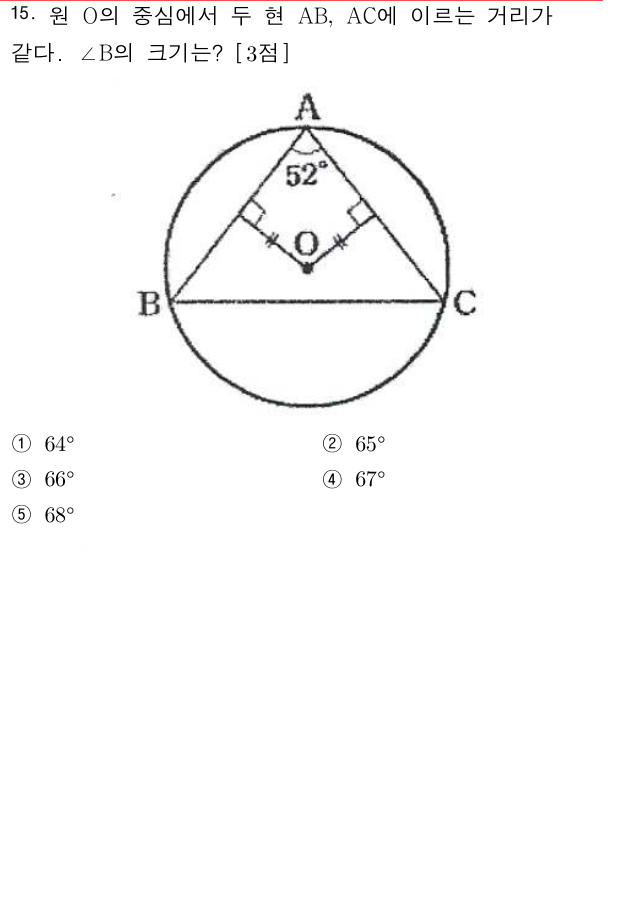
접점의 직각과 반지름/외부점의 직각삼각형으로 넓이를 구성한다.
HOLD: item_level_unit_live_family_generator_rule_and_prerequisite_review_pending; source_custody_rights_permission_pending; canonical_text_product_render_review_pending
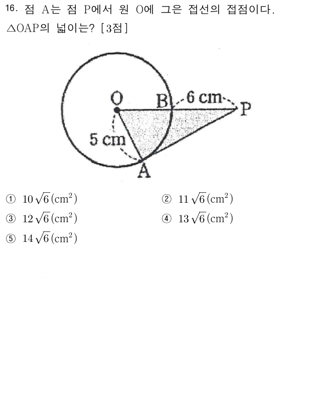
현을 이등분한 직각삼각형에서 두 반지름 제곱의 차를 읽는다.
HOLD: item_level_unit_live_family_generator_rule_and_prerequisite_review_pending; source_custody_rights_permission_pending; canonical_text_product_render_review_pending
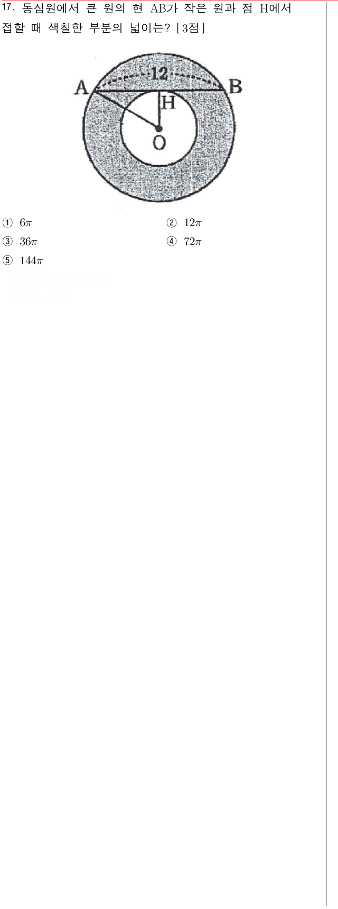
한 외부점의 같은 접선 길이와 직각삼각형으로 지름을 구성한다.
HOLD: item_level_unit_live_family_generator_rule_and_prerequisite_review_pending; source_custody_rights_permission_pending; canonical_text_product_render_review_pending
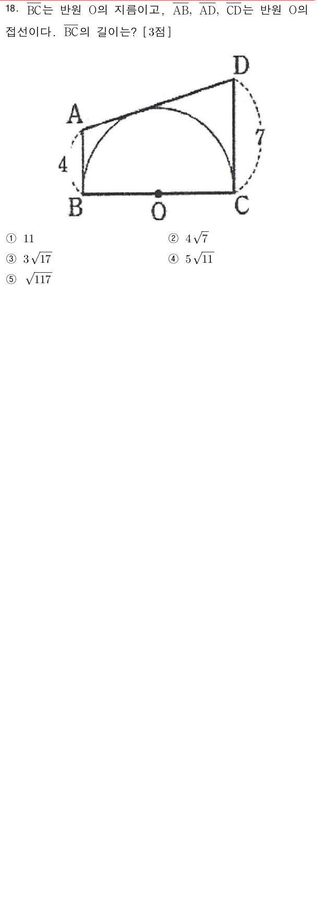
정사각형의 변과 같은 접선 길이를 이용하여 양수 길이식을 구성한다.
HOLD: item_level_unit_live_family_generator_rule_and_prerequisite_review_pending; source_custody_rights_permission_pending; canonical_text_product_render_review_pending
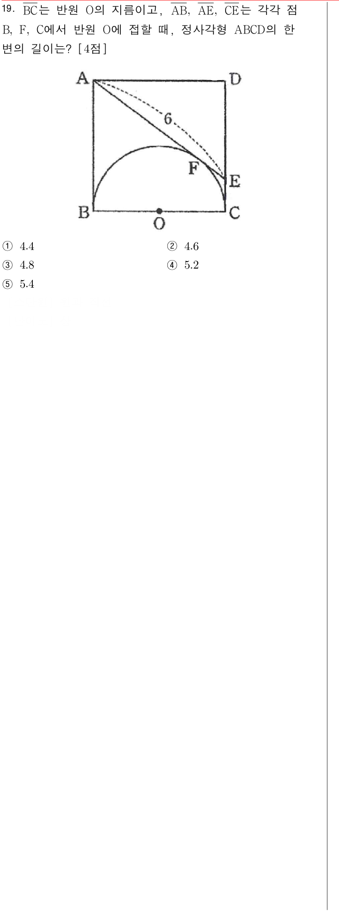
사분원의 직각삼각형에서 삼각비를 나타내는 선분과 비의 곱을 읽는다.
HOLD: item_level_unit_live_family_generator_rule_and_prerequisite_review_pending; source_custody_rights_permission_pending; canonical_text_product_render_review_pending; specific_grade_method_risk
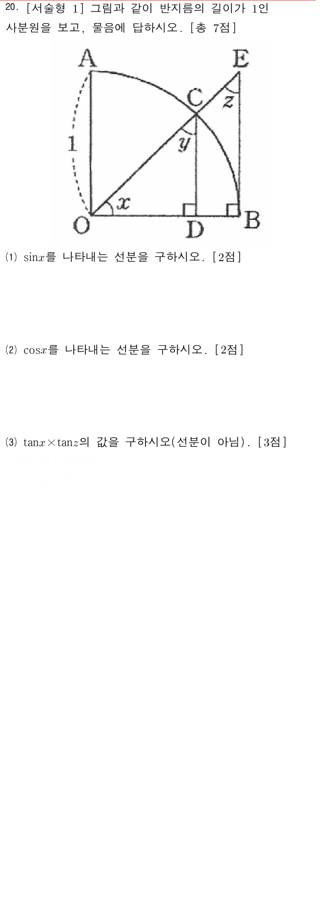
교차한 두 직각삼각형의 각, 선분, 넓이를 순서대로 구성한다.
HOLD: item_level_unit_live_family_generator_rule_and_prerequisite_review_pending; source_custody_rights_permission_pending; canonical_text_product_render_review_pending; specific_grade_method_risk
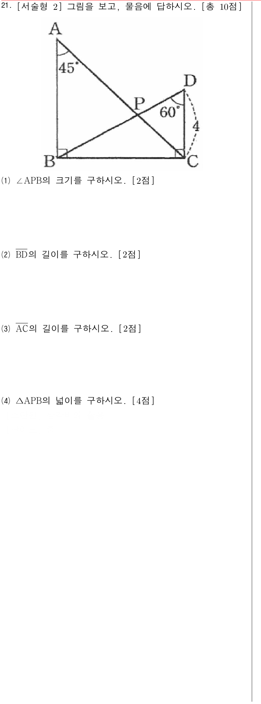
반지름-접선의 직각 및 같은 접선 길이로 각, 선분, 둘레를 구성한다.
HOLD: item_level_unit_live_family_generator_rule_and_prerequisite_review_pending; source_custody_rights_permission_pending; canonical_text_product_render_review_pending; specific_grade_method_risk
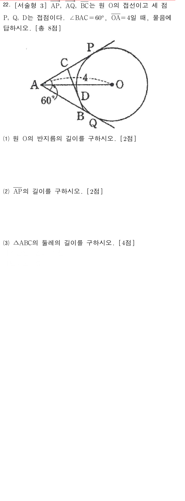
두 접점의 직각과 중심각 관계에서 선분과 삼각형-부채꼴 넓이를 구성한다.
HOLD: item_level_unit_live_family_generator_rule_and_prerequisite_review_pending; source_custody_rights_permission_pending; canonical_text_product_render_review_pending
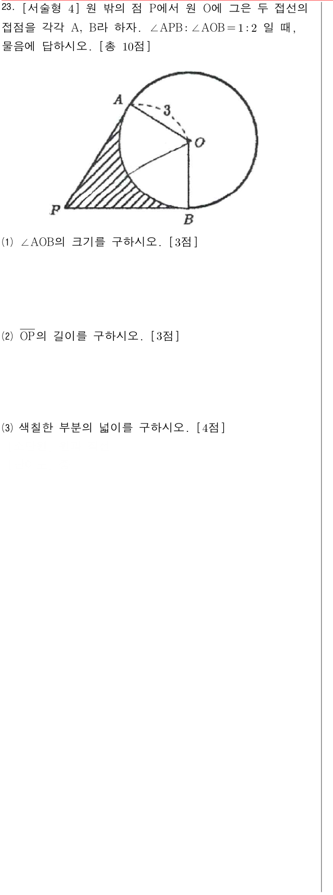